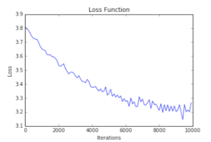

LOYOLA-ICAM COLLEGE OF ENGINEERING AND TECHNOLOGY (LICET)
Loyola Campus, Nungambakkam, Chennai – 600034Applying Machine Learning to Classify Tamil Handwritten Characters
Done By
Arockia Richard Raj M
Supervisor Name
Ms. S Nirmala
Batch: 2012 - 2016
Outline
- Problem Statement and Objective
- Introduction to the Domain - Machine Learning and Deep Learning
- Literature Survey
- Requirements
- Analysis - Existing VS Proposed
Outline
- System Architecture
- Project Features
- Algorithms
- Implementation
- Demo
- Benchmark Dataset
Outline
- Performance Metrics
- Test Case
- Findings
- Future Work
- References
Problem Statement
Problem Statement
Image Understanding Systems can help us a lot
Eg. Cheques, Number Plates, Passports
Objectives
- To develop a system that can classify tamil characters using raw pixels
- To minimise the amount of human assistance required for the system
- To understand to how much extent a linear classifier can be used on the dataset
- To understand to how much extent, the architecture of a neural network affects the classification rate
- To understand how a deep learning algorithm performs on the dataset
- To learn machine learning and deep learning
Introduction to the Domain of Work
Machine Learning
"the field of study that gives computers the ability to learn without being explicitly programmed." - Arthur Samuel
In Simpler Terms, Decision Making without if-else statements
Motivation
This is what the computer sees

Possible Solutions
- Hardcode - If-Else
- Machine Learning or Deep Learning
Literature Survey
On the Previous Works in Tamil Character Classifiaction
| Ref.No | Reference Paper | Authors | Findings | Cons |
|---|---|---|---|---|
| [1] | A Two Stage Recognition Scheme for Handwritten Tamil Characters | U. Bhattacharya, S. K. Ghosh and S. K. Parui |
|
|
Literature Survey
On the Previous Works in Tamil Character Classifiaction
| Ref.No | Reference Paper | Authors | Findings | Cons |
|---|---|---|---|---|
| [2] | Translation and Scale Invariant Recognition of Handwritten Tamil Characters Using a Hierarchical Neural Network | T.Paulpandian and V.Ganapathy |
|
|
Literature Survey
On the Previous Works in Tamil Character Classifiaction
| Ref.No | Reference Paper | Authors | Findings | Cons |
|---|---|---|---|---|
| [3] | Handwritten Character Recognition of South Indian Scripts: A Review | Jomy John, Pramod K. V, Kannan Balakrishnan |
|
|
Literature Survey
On the Previous Works in Tamil Character Classifiaction
| Ref.No | Reference Paper | Authors | Findings | Cons |
|---|---|---|---|---|
| [4] | A Novel SVM-based handwritten Tamil character recognition system | Shanthi N, Duraiswami K |
|
|
Literature Survey
On the Previous Works in Tamil Character Classifiaction
| Ref.No | Reference Paper | Authors | Findings | Cons |
|---|---|---|---|---|
| [5] | Offline Tamil Handwritten Character Recognition Using Sub Line Direction and Bounding Box Techniques | S. M. Shyni, M. Antony Robert Raj, S. Abirami |
|
|
Literature Survey
On the Previous Works in Tamil Character Classifiaction
| Ref.No | Reference Paper | Authors | Findings | Cons |
|---|---|---|---|---|
| [6] | A survey on Tamil handwritten character recognition using ocr techniques | Antony Robert Raj M, Abirami S |
|
|
Literature Survey
On CNN Architecture
| Ref.No | Reference Paper | Authors | Findings |
|---|---|---|---|
| [7] | Imagenet classification with deep convolutional neural networks | A. Krizhevsky, I. Sutskever, and G. E. Hinton |
|
Literature Survey
On CNN Architecture
| Ref.No | Reference Paper | Authors | Findings |
|---|---|---|---|
| [8] | Very deep convolutional networks for large-scale image recognition | K. Simonyan and A. Zisserman |
|
Dropouts and other Hyper parameters
Online Courses
System Requirements - Training
Hardware
- 16 GB RAM
- Intel i7 3rd gen processor
Software
- Python
- numpy
- scikit-learn
- PIL
- ipython
- matplotlib
- theano
- lasagne
Existing System
Manual Feature Extraction Required
Proposed System
Manual Feature Extraction NOT Required
System Architecture
System Architecture
Project Features
- Offline based - direct images
- Can support any image formats
- No hand engineered features required
- Single stage process
- Output classes are not clustered
- Limited training examples
Project Features
- 45 class classifier
- Prints tamil characters - unicode
- Works with images that are compressed
- No noise removal stage
- Open Source
Algorithms
Softmax Classifier
- Score Function : y = ${softmax}(x)_i$ Here softmax is : ${softmax}(x)_i = \frac{\exp(x_i)}{\sum_j \exp(x_j)}$ And x is the result of the linear function W(input) + b
- Initialise the weights and biases
- Loss Function : $-\log\left(\frac{e^{f_{y_i}}}{ \sum_j e^{f_j} }\right) \hspace{0.5in} \text{or equivalently} \hspace{0.5in} L_i = -f_{y_i} + \log\sum_j e^{f_j}$
- Set the hyper parameters
- Run an optimisation algorithm (SGD)
Algorithms
2 Layer Neural Network
- ReLU: max(0, x)
- Gradient Descent
Algorithms
3 Layer Neural Network
- ReLU: max(0, x)
- Gradient Descent with Nesterov Momentum
Algorithms
Convolutional Neural Network
- Weights - Xavier Initialization technique
- Gradient Descent with Nesterov Momentum
Algorithms
Convolutional Neural Network
- Non Linearity : ReLU
- Filters :
- Size : 3 x 3
- Number of Filters : Conv_1: 32, Conv_2: 64
- Zero Padding: 1 pixel
- Max-Pooling :
- Size : 2 x 2
- Stride : 2
- Dropout is added for regularization
- Number of hidden units : FC_1 layer - 250 , FC_2 - 45
Implementation
System = API + ipython notebook client
# Now Start training by a creating a ConvNet Instance
from ConvNet import ConvNet
net = ConvNet()
model = net.fit(X_tr, y_tr, X_val, y_val, X_ts, y_ts)
Implementation
Demo
Results Obtained
Linear Classifier
| Number of Iterations | Learning Rate | Regularization (L2) | Validation Accuracy |
|---|---|---|---|
| 1500 | 1 x 10-7 | 5 x 10-9 | 0.02 |
| 1500 | 0.001 | 0.5 | 0.198 |
| 1500 | 0.001 | 0.1 | 0.359 |
| 10,000 | 0.001 | 0.1 | 0.6036 |
| 15,000 | 0.001 | 0.1 | 0.578 |
| 10,000 | 0.01 | 0.1 | 0.472 |
Results Obtained
Two Layer Neural Network
| Number of Iterations | Number of Hidden Units | Learning Rate | Regularization (L2) | Batch Size | Validation Accuracy |
|---|---|---|---|---|---|
| 1500 | 1000 | 0.1 | 0.1 | 200 | 0.25 |
| 10,000 | 1000 | 0.1 | 0.01 | 200 | 0.67 |
| 10,000 | 1000 | 0.1 | 0.001 | 200 | 0.69 |
| 20,000 | 1000 | 0.1 | 0.001 | 200 | 0.693 |
| 10,000 | 2000 | 0.1 | 0.001 | 200 | 0.704 |
| 10,000 | 2000 | 0.1 | 0.0001 | 200 | 0.695 |
Results Obtained
Three Layer Neural Network
| Number of Epochs | Learning Rate | Momentum | Batch Size | Dropout | Validation Accuracy |
|---|---|---|---|---|---|
| 165 | 0.1 | 0.7 | 300 | Input + first hidden layer | 0.02 |
| 165 | 0.01 | 0.3 | 300 | Input + first hidden layer | 0.727 |
| 400 | 0.01 | 0.7 | 300 | Input + first hidden layer | 0.77 |
| 165 | 0.01 | 0.7 | 300 | Input + first hidden layer | 0.02 |
| 500 | 0.01 | 0.8 | 300 | Input + first hidden layer | 0.844 |
| 500 | 0.01 | 0.8 | 300 | All | 0.772 |
Results Obtained
Convolutional Neural Network
| Number of Epochs | Learning Rate | Momentum | Batch Size | Dropout | Validation Accuracy |
|---|---|---|---|---|---|
| 500 | 0.001 | 0.8 | 300 | FC_1 at 50% | 0.9253 |
| 500 | 0.01 | 0.5 | 300 | Max_pool_2 at 50%, FC_1 at 50% | 0.9503 |
Benchmark Dataset
The HPL isolated handwritten Tamil character dataset - contains approximately 500 isolated samples each of 156 Tamil “characters”
Performance Metrics
Training and Test set accuracy -
mean(prediction == actual) * 100
Performance Metrics
Loss Graphs and Filter Visualisations

Test Cases
- Will be the test set portion of the entire dataset
- 90 samples per class
- 4275 samples
Findings
- Linear Classifers
- Took the least training time
- Produces average results
- Not a good idea to try on images
- Adding layers to an existing neural network architecture will not drastically improve the accuracy
- Plot graphs
Findings
- Tuning Hyperparameters takes time
- The number of hidden units (hyperparameter) does not affect accuracy much ( Eg - 1000 units and 2000 units )
- Tuning hyperparameters can improve accuracy tremendously (2% - 52%)
- Mini Batch training is better
Future Work
- Model Ensembles
- Extend to all Tamil Characters
- Try out different CNN models
- Build a proper Tamil Character Recognition pipeline
References
- [1]. Bhattacharya U, Ghosh SK, Parui SK (2007) A two stage recognition scheme for handwritten Tamil characters. In: Proceedings of the ninth international conference on document analysis and recognition (ICDAR 2007). IEEE Computer Society, Washington, DC, pp 511–515
- [2]. T.Paulpandian and V.Ganapathy Translation and Scale Invariant Recognition of Handwritten Tamil Characters Using a Hierarchical Neural Network”, 1993 IEEE
- [3]. Jomy John, Pramod K. V, Kannan Balakrishnan Handwritten Character Recognition of South Indian Scripts: A Review , National Conference on Indian Language Computing, Kochi, Feb 19-20, 2011
- [4]. Shanthi N, Duraiswami K A Novel SVM-based handwritten Tamil character recognition system. Springer; Pattern Analysis and Application. 2010; 13(2):173–80.
- [5]. S. M. Shyni, M. Antony Robert Ra, S. Abiram, Offline Tamil Handwritten Character Recognition Using Sub Line Direction and Bounding Box Techniques Apr 2015, Indian Journal of Science and Technology
References
- [6]. Antony Robert Raj M, Abirami S. A survey on Tamil handwritten character recognition using ocr techniques. The Second International Conference on Computer Science, Engineering and Applications (CCSEA). 2012; 5:115-27.
- [7]. Alex Krizhevsky, Ilya Sutskever, and Geoffrey E. Hinton. Imagenet classification with deep convolutional neural networks. In F. Pereira, C. J. C. Burges, L. Bottou, and K. Q. Weinberger, editors, Advances in Neural Information Processing Systems 25, pages 1097– 1105. Curran Associates, Inc., 2012.
- [8]. K. Simonyan and A. Zisserman. Very deep convolutional networks for large-scale image recognition. arXiv preprint arXiv:1409.1556, 2014.
- CS231n
- Coursera Course
- HPL Tamil Dataset